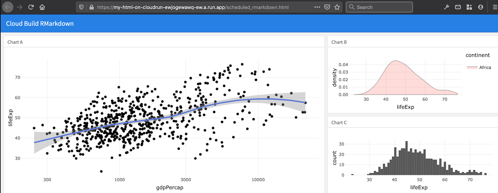

Run R code on a schedule
2022-03-02
Source:vignettes/usecase-scheduled-r-builds.Rmd
usecase-scheduled-r-builds.RmdSometimes you just want to have some R code running whilst you get on
with something else. In this case you can use
cr_buildstep_r() to run your R code even after you have
turned your computer off, since its running in the cloud. You can also
set it up on a schedule to run periodically.
When running R code, it needs to run in an environment that has the
packages and resources it needs. If those are covered by images such as
rocker/verse (the tidyverse) then you can commit it
straight away. Otherwise you can first make a custom Docker file with
the R packages you need in it, and then run your code against that.
Once you have your R code and chosen the Docker image, then you can
use cr_deploy_r() to point at your R file and Docker image,
set the timeout to what you need (the maximum is 24 hours) and select a
schedule if you need it.
Typical workflow for running R on Cloud Build
A typical workflow is:
- Create your R script
- Pick or build a Docker image running R that has the libraries
necessary for that script - for example
rocker/verse. If you need to build your own with aDockerfileinclude that in a step before your R code runs. - Use that Docker image to run your R script within with
cr_buildstep_r() - Deploy the Build via
cr_build() - Optionally setup scheduling or a build trigger for when your R script will fire in the future.
An example of code doing the above would be:
Using a precreated docker image
The below assumes your R script can run with
rocker/verse
my_r_script <- "here.R"
bs <- cr_buildstep_r(
my_r_script,
name = "rocker/verse"
)
# here you can add metadata for the build steps, such as timeout
my_build <- cr_build_yaml(bs, timeout = 2400)
# build it
cr_build(my_build)Using an R Docker image you build yourself
Here the Docker image is first built, then used in the R build
afterwards (in the name argument). It is also pushed to
Google Container Registry.
my_r_script <- "here.R"
my_dockerfile_folder <- "my_build/"
# build your image called my-r-docker
cr_deploy_docker(my_dockerfile_folder,
image_name = "gcr.io/$PROJECT_ID/my-r-docker")
# now the buildstep uses the built image
bs <- cr_buildstep_r(
my_r_script,
name = "gcr.io/$PROJECT_ID/my-r-docker")
# here you can add metadata for the build steps, such as timeout
my_build <- cr_build_yaml(bs, timeout = 2400)
# build it
cr_build(my_build)Other Docker options
Variations include:
- Include the R script within the Docker container, so you just need to run the Docker image to execute your script
- Build the Docker image in the same Cloud Build as the R script
running, for which you will need a source for the Dockerfile such as a
trigger on GitHub via
cr_buildtrigger_repo()or Cloud Storage
The RStudio gadget
An RStudio gadget is also available to help you deploy:

If you want help creating the Docker image, try containerit to
generate your Dockerfile, then use cr_deploy_docker() to
build it.
NOTE: You must name the docker file “Dockerfile” when you use the
containerit::write() function
Execute R scripts directly from Cloud Storage
In some cases you may hit character limits of the cloudbuild file in
which case you will need to execute the R code from a file. The easiest
way to do this is to upload your R code to a Cloud Storage bucket and
then supply the gs:// URI to
cr_buildstep_r():
The below example uses a public bucket and R image, for your use case you would change to your own private one that your Cloud Build service email has access to:
library(googleCloudRunner)
large_r_job <- cr_build_yaml(
steps = c(
cr_buildstep_r("gs://mark-edmondson-public-read/schedule.R",
name = "gcr.io/gcer-public/googleauthr-verse:latest")
)
)
cr_build(large_r_job)Authentication within the R script on Cloud Build
The recommended way to use secrets in build is to use
cr_buildstep_secret(), and upload the sensitive
authentication file to Google Secret Manager
before hand.
You can also authenticate without uploading any file, if you can use the default service account. This is usually the case for cloud services such as BigQuery.
The default metadata of the Cloud Build server is the same as
googleComputeEngineR, so you can use
googleAuthR::gar_gce_auth("default", scopes = "https://www.googleapis.com/auth/cloud-platform").
You can also use the Cloud Build email (the one that looks like
{project-number@cloudbuild.gserviceaccount.com}) if its
given the right access in Cloud IAM, authentication in your R script
will look like
googleAuthR::gar_gce_auth("{project-number@cloudbuild.gserviceaccount.com}", scopes = "https://www.googleapis.com/auth/cloud-platform")
This enables you in the R script to download files from Cloud Storage, for example. A minimal example is shown below:
library(googleCloudStorageR)
library(googleAuthR)
gar_gce_auth("default", scopes = "https://www.googleapis.com/auth/cloud-platform")
## or if using the build email..
# gar_gce_auth("{project-number@cloudbuild.gserviceaccount.com}",
# scopes = "https://www.googleapis.com/auth/cloud-platform")
gcs_list_buckets("my_project")
auth_file <- gcs_get_object("config.json", bucket = "my-bucket")
...do something with the config file...This would then be saved to an R script and deployed via the gadget or:
cr_deploy_r("the_script.R", r_image = "gcr.io/gcer-public/googleauthr-verse")…where the docker R image is one with googleCloudStorageR installed.
Importing data for your R script to operate upon
There are lots of options for how your script will interact with data:
- Download the data from within the R script itself, perhaps with
googleCloudStorageRor similar - Have a previous buildstep download the data into the Cloud Build
workspace
/workspace/, then have your R script import that file. e.g. usecr_buildstep_gcloud()to download from Cloud Storage before runningcr_buildstep_r() - Use
cr_buildstep_git()to clone or pull from another git repo - If using a
RepoSource()or aStorageSource()object in your Cloud Build, update those sources from some other process that will be included in the next build - If using Build Triggers, the git repo the trigger is based upon will include the changes of the latest git commit
- Include the data within the Docker container environment the R script runs within
Build an Rmd on a schedule and host its HTML on Cloud Storage
Cloud Storage can host public HTML files like a website, which can be accessed via public or private viewers. This can be useful in setting up reporting infrastructure.
A video of the below workflow is here:
The Cloud Build below makes use of Cloud Build artifacts to send the built Rmd files to a public Cloud Storage bucket. The Rmd is built on a schedule to pull in new data from a Google Sheet:
rmd_build <- cr_build_yaml(
steps = c(
cr_buildstep(
"gsutil",
args = c("cp",
"gs://mark-edmondson-public-read/scheduled_rmarkdown.Rmd",
"scheduled_rmarkdown.Rmd")),
cr_buildstep_r(
"gcr.io/gcer-public/render_rmd:master",
r = "rmarkdown::render('scheduled_rmarkdown.Rmd',
output_file = 'scheduled_rmarkdown_2020.html')",
)),
artifacts = cr_build_yaml_artifact(
"scheduled_rmarkdown_2020.html",
bucket = "mark-edmondson-public-read")
)
# test the build
built <- cr_build(rmd_build)Once the build is tested, we now schedule the Rmd to build each morning, adapting to changes in the source data file.
# schedule the build
cr_schedule("rmd-demo", schedule = "15 5 * * *",
httpTarget = cr_schedule_http(built))The example Rmd file is built and available on a public Cloud Storage bucket - the above example is available at this link

Build and deploy Rmd files to Cloud Run on a schedule
I have a flexdashboard that shows data from a Google Sheet with ggplotly. What's the best way to host the dashboard somewhere and make it so it shows the latest data? i.e. how should I show dynamic data in an RMarkdown dashboard? Continually reknit? Make a plumber API? #rstats
— Andrew Heiss, PhD (@andrewheiss) January 1, 2020
Cloud Run scales from 0 to millions of hits, so can be an option for
hosting a website. In particular you may want a private internal
website, have R code executing via a plumber API in the same container,
or have lots of traffic or data that goes over other free hosting
options such as GitHub pages. A nginx server configuration is included
to host any HTML you provide via cr_deploy_html().
You may prefer using Cloud Storage public URLs if you don’t need any of Cloud Run’s features, like the previous example.
Coupled to that, a common use case is to render Rmd files and host them on a website like the tweet above. For the above tweet scenario, the Rmd has a setup block that reads from googlesheets via the code below:
```{r setup, include=FALSE}
library(flexdashboard)
library(googlesheets4)
library(ggplot2)
library(plotly)
library(dplyr)
# for public Googlesheets.
# If private see https://gargle.r-lib.org/articles/non-interactive-auth.html
sheets_deauth()
# this is the data that may update each time the Rmd is rendered
gm <- sheets_example("gap") %>% read_sheet()
gm_agg <- gm %>%
mutate(gdp=gdpPercap*pop) %>%
filter(continent=="Africa") %>%
group_by(year) %>%
summarize(mean(lifeExp), mean(gdp))
p <- ggplot(gm, aes(gdpPercap, lifeExp)) + theme_minimal() + scale_x_log10()
```The build Rmd docker in this case needs all the libraries listed
(flexdashboard, googlesheets4 etc.) included in its build - this could
be built before hand in another Cloud Build - in this case the libraries
are all in gcr.io/gcer-public/render_rmd
For this example, the build is not reading from a git repo but the
Rmd file is downloaded from a Cloud Storage bucket, that you may have
uploaded to manually, via googleCloudStorageR or perhaps
copied over from a repo in another Cloud Build on a Build Trigger.
The scheduled build then can be enabled via:
- Uploading your Rmarkdown files to a Cloud Storage bucket
- Create a build that will:
- download the Rmd file
- render the Rmd creating the HTML files
- configure nginx for Cloud Run,
- build a Docker image of nginx with your HTML
- serve it on Cloud Run.
r <- "rmarkdown::render('scheduled_rmarkdown.Rmd', output_file = 'scheduled_rmarkdown.html')"
build_rmd <- cr_build_yaml(
steps = c(
cr_buildstep(
id = "download Rmd template",
name = "gsutil",
args = c("cp",
"gs://mark-edmondson-public-read/scheduled_rmarkdown.Rmd",
"scheduled_rmarkdown.Rmd"),
),
cr_buildstep_r(
id="render rmd",
r = r,
name = "gcr.io/gcer-public/render_rmd:master"
),
cr_buildstep_nginx_setup("/workspace/"),
cr_buildstep_docker("html-on-cloudrun", tag = "$BUILD_ID"),
cr_buildstep_run(name = "my-html-on-cloudrun",
image = "gcr.io/mark-edmondson-gde/html-on-cloudrun:$BUILD_ID",
concurrency = 80)
),
images = "gcr.io/mark-edmondson-gde/html-on-cloudrun:$BUILD_ID",
)- Run a test build to check it works.
b <- cr_build(build_rmd)
built <- cr_build_wait(b)You should see a Cloud Run URL in the logs, like this one:
https://my-html-on-cloudrun-ewjogewawq-ew.a.run.app/scheduled_rmarkdown.html

- Schedule the build using cron syntax
schedule_me <- cr_schedule_http(built)
cr_schedule("rmd-on-cloudrun", "15 8 * * *", httpTarget = schedule_me)
#==CloudScheduleJob==
#name: projects/project-name/locations/europe-west1/jobs/rmd-on-cloudrun
#state: ENABLED
#httpTarget.uri: https://cloudbuild.googleapis.com/v1/projects/project-name/builds
#httpTarget.httpMethod: POST
#userUpdateTime: 2020-01-04T08:34:42Z
#schedule: 15 8 * * *
#timezone: UTC Do it all in R using cr_deploy_r()
An alternative if you only wanted to do a scheduled deployment would
be to put all steps in an R script (downloading, building and uploading
to Cloud Storage via googleCloudStorageR) and use the
RStudio gadget or cr_deploy_r()
Migrate an existing scheduled Docker container
You may have an existing Docker container containing code, that doesn’t need a public URL.
For example, a self-contained R script with
googleAnalyticsR and bigQueryR pre-installed,
that downloads data from Google Analytics and uploads it to BigQuery.
This may be running on a VM from googleComputeEngineR,
Kubernetes or Airflow KubernetesPodOperator.
If you give the cloud build service email the right permissions, then this can all be done on Cloud Build + Cloud Scheduler.
For example, say your existing container is called
gcr.io/my-project/my-r-script. A Cloud Build could look
simply like this:
r_code <- cr_build_yaml(
cr_buildstep("gcr.io/my-project/my-r-script")
)
cr_build(r_code)You could add other steps if you wanted, such as sending an email
when done via cr_buildstep_mailgun() or
cr_buildstep_slack():
r_code <- cr_build_yaml(
steps = c(cr_buildstep("gcr.io/my-project/my-r-script"),
cr_buildstep_slack("The script run ok")),
substitutions = c(`_SLACK_WEBHOOK` = "https://your_slack_webhook")
)
cr_build(r_code)To set this up in a schedule, add it to the scheduler like so:
schedule_me <- cr_schedule_http(r_code)
cr_schedule("r-code-example", "15 8 * * *", httpTarget = schedule_me)Run R code via Cloud Run
Instead of using Cloud Build, you may want to use Cloud Run as the engine running the R code, either because you want to control the code via parametisation of a HTTP request to your R code, or one use case I came across was needing to make requests from a fixed ip address - Cloud Run offers a way to fix the IP of the app.
See the R API Microservices Use Case for more details on creating and deploying an R API using plumber.
R code is triggered using an API package such as plumber to create HTTP endpoints. The scheduler can then use that HTTP endpoint as the mechanism to trigger schedules.
See ?cr_run_schedule_http for examples.
Public APIs
For R code that is public you don’t need to worry about
authentication, so you can trigger your R code by creating a
?HttpTarget object that will carry your endpoint and
parameters as set up in your plumber app:
# for unauthenticated apps create a HttpTarget
run_me <- HttpTarget(
uri = "https://public-ewjogewawq-ew.a.run.app/echo?msg=blah",
http_method = "GET"
)
cr_schedule("cloudrun-scheduled", schedule = "16 4 * * *", httpTarget = run_me)Private APIs
For private R APIs, you can use cr_jwt_create() and
friends to call the API from your local R session, but for Cloud
Scheduler to call the API a special new service account is needed with
Cloud Run Invoker authentication rights.
When you create an app via
cr_deploy_run("my-app", allowUnauthenticated = TRUE) a new
service account will be created with the rights called “my-app-invoker”.
Use that email to tell the scheduler how to call the app:
# for authenticated Cloud Run apps - create with allowUnauthenticated=FALSE
cr_deploy_run("my-app", allowUnauthenticated = TRUE)
# deploying via R will help create a service email called my-app-invoker
cr_run_email("my-app")
#> "my-app-invoker@your-project.iam.gserviceaccount.com"
# schedule the endpoint
my_app <- cr_run_get("my-app")
endpoint <- paste0(my_app$status$url, "/fetch_stuff")
app_sched <- cr_run_schedule_http(endpoint,
http_method = "GET",
email = cr_run_email("my-app"))
cr_schedule("my-app-scheduled-1",
schedule = "16 4 * * *",
httpTarget = app_sched)